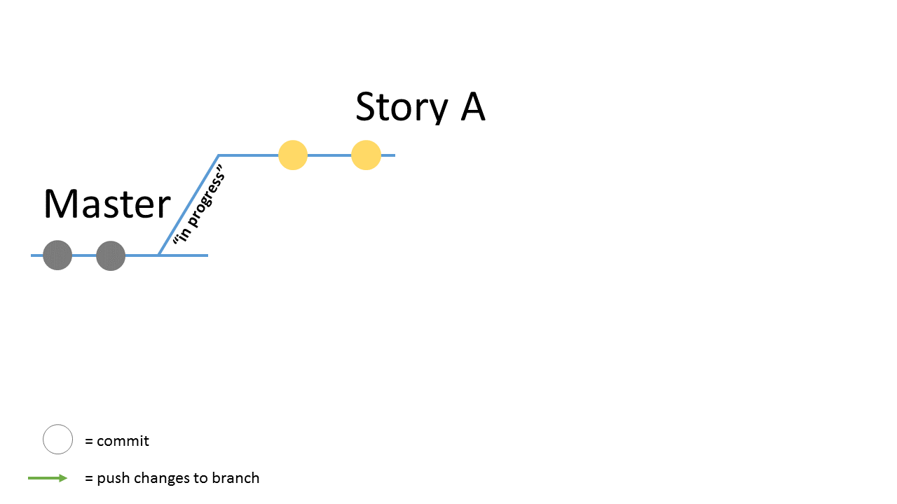
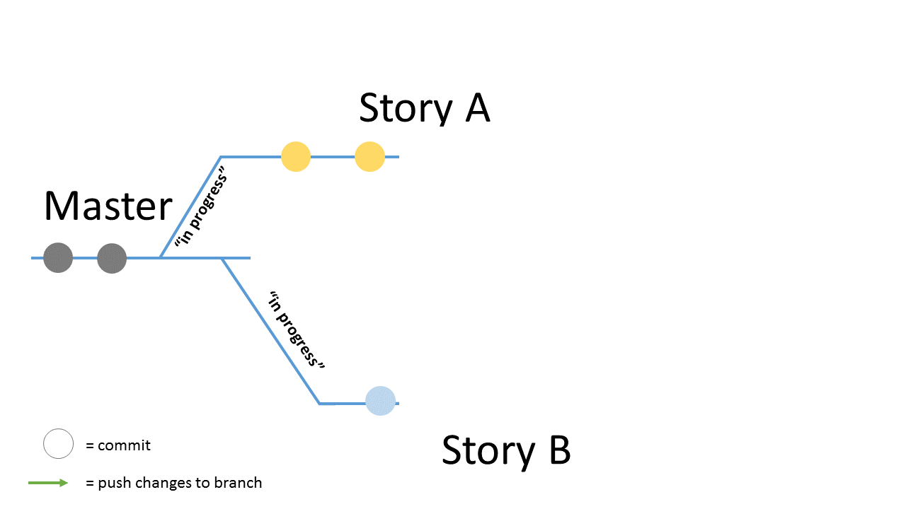
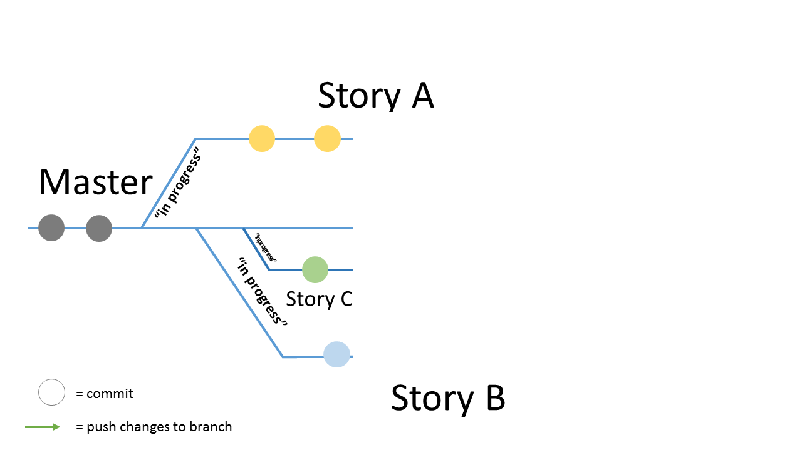
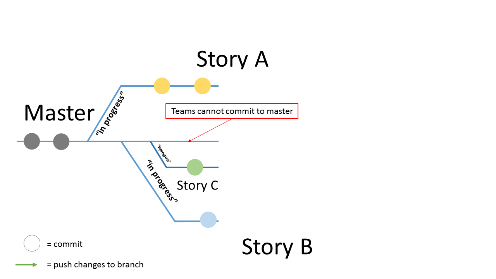
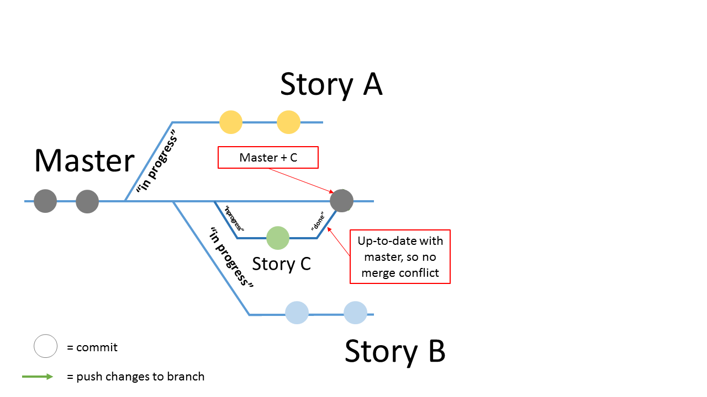
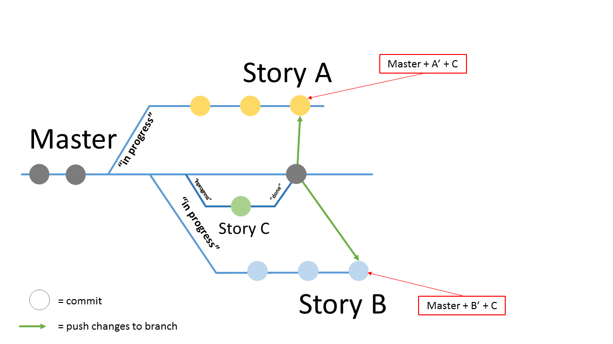
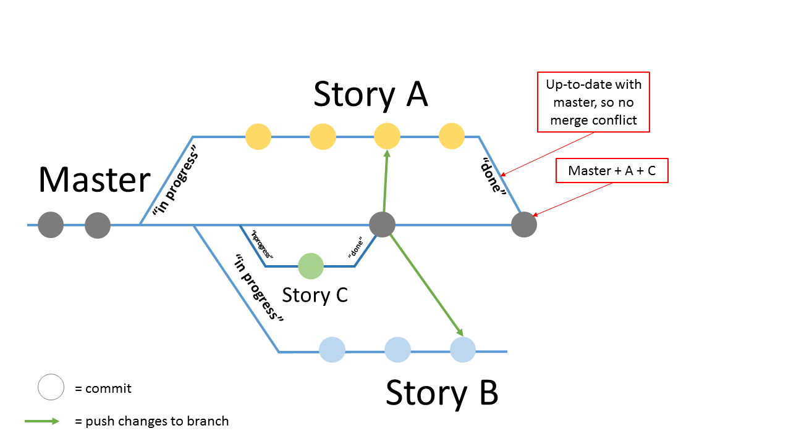
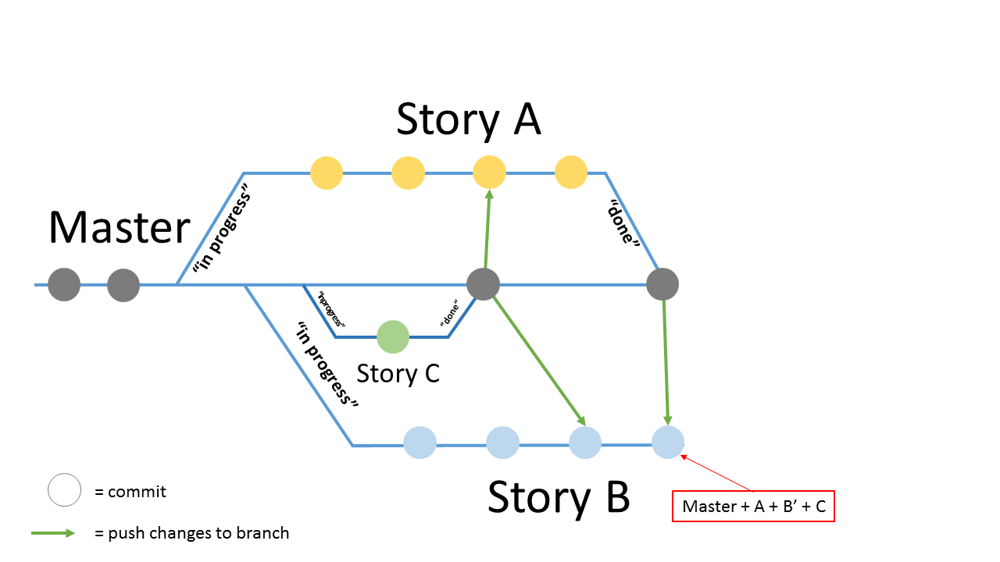
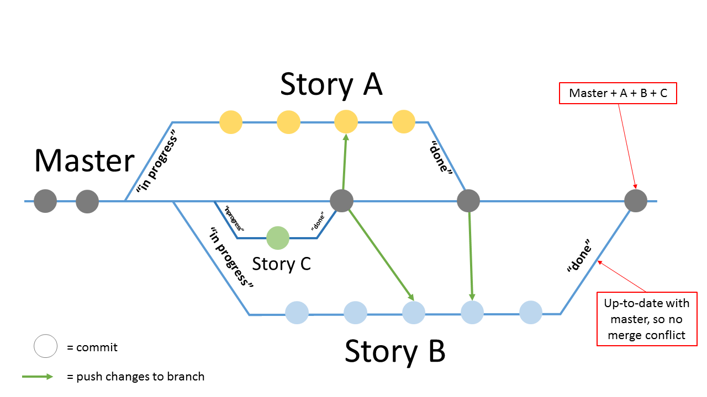

Mayfly
bol.com context
900 employees, more than 30 teams
Adopted Scrum in 2009:
5 to 8 people per team
4 week Sprint rhythm
Over 200 deployable projects
3 different release models
Growing pains…
Shared TAXP platform
Automated staged release train every 4 weeks
Collectively burn down 700+ US each month
Responsible team per application
Cross team commits
→ master never stable
Development process unsuited to support the growth of the organization
The solution: Mayfly
Isolated User Story-centric
continuous delivery
development platform
User Story flow
User story
A User Story describes a single
feature that can be tested and accepted
in isolation, after which it can be (independently)
deployed to production.
Mayfly
Provides each user story with:
A feature branch
Continuous Integration
Virtual production-like environment
Definition-of-Done
Everything-as-code
Build pipelines as code
Environments as code
Definition-of-Done as code
Tests as code
Teams in control; behaviours and configuration is stored in the application repository.
Mayfly Principles
master== productionDeploy when it’s done
UserStory Stages
Start working on a story
Jira → "In progress"
Create branch from master
Spin up CI environment (Jenkins, JobDSL)
Create virtual environment
Start up Service Discovery (Consul)
Clone & update application properties
Generate databases (Oracle, Postgres, Mongo)
Install production 'master' container (Mesos, Marathon, Docker)
Make a change (commit)
Build pipeline builds commit as Docker image
Deploy new image to User Story environment
Run (System) Tests
(Re)evaluate Definition of Done (DoD)
Resolve story
Jira → "Done"
Validate Definition of Done
Feature branch is merged to
master(never any conflicts)Destroy virtual environment
Deploy last UserStory to Production
What about Performance Testing?
… in the UserStory environment?
… on Production?
… on cross-production?
… on cross-production per featureset?
UserStory Environment
Script based performance-tests for each story.
Pros
Isolated environment & changeset (master+1)
Small scope with stubs
Huge incentive → DoD
Cons
Testing takes time
Behaviour of virtual environments could be unpredictable
Production
Measurements based on alerting and monitoring
Pros
Real usage, predictable resources
No test scripts to maintain
Cons
Fluctuating peak load
Everything must be measured
Continuous deployments interfere
System-as-a-whole test
Cross-Production
Single high load shadow environment
Pros
Peak load can be simulated
Stable resources
Cons
Continuous deployments interfere
Problem-focus causes test-debt
Cross-Production per featureset
Multi high load shadow environments per featureset
Pros
Peak load can be simulated
Fixed set of features per run
Allows automatic pinpointing
Cons:
Behaviour of virtual environments could be unpredictable
Requires all dependencies to run in cluster
So… ?
… in the UserStory environment!
… on Production!
… on cross-production!
… on cross-production per featureset!
Mayfly Current state
Mayfly model reached maturity
Proven company track-record:
28 applications are Mayfly enabled
of which 6 are Mayfly services
500+ mayfly enabled UserStories
Integrating with subsystems
Database Support for Oracle, Postgres & Mongo
Future
Add more applications
Container deployments to Production
Run clustered production
Design for extension
Open source
We’re hiring!
Thank you
Chris Kramer @cjhkramer
Extra
But what about conflicts on master?
That never happens (no, really)
Automated SCM workflow
Automated SCM workflow

Automated SCM workflow

Automated SCM workflow

Automated SCM workflow

Automated SCM workflow

Automated SCM workflow

Automated SCM workflow

Automated SCM workflow

Automated SCM workflow
